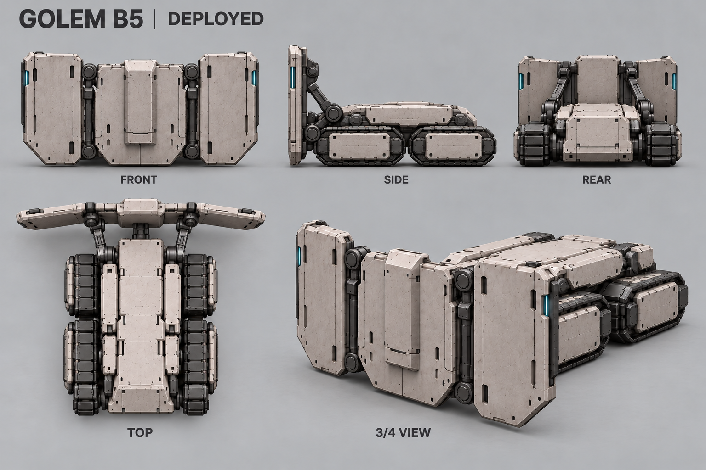
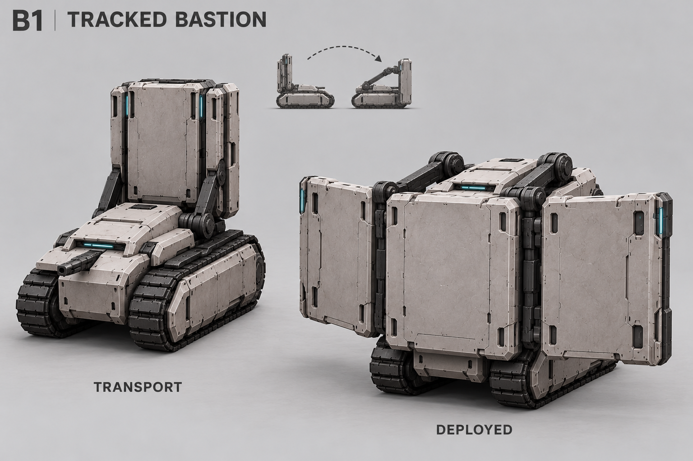
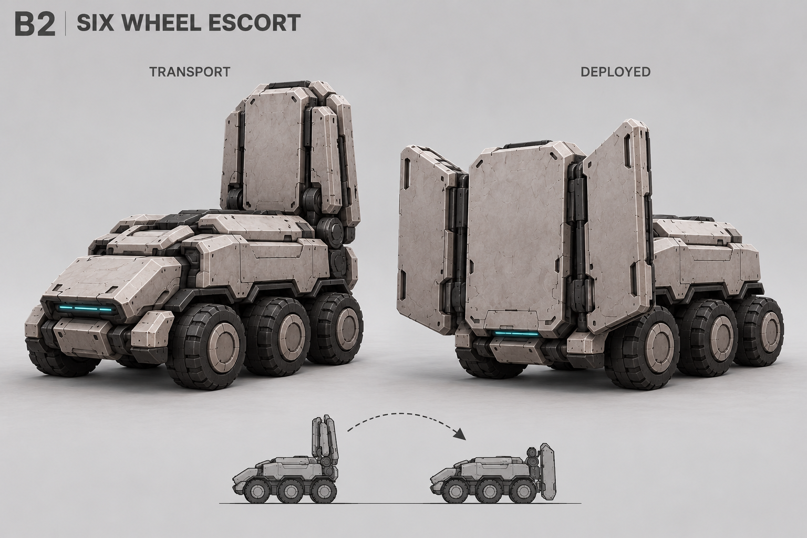
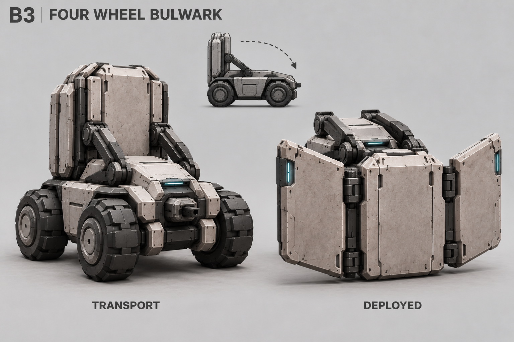
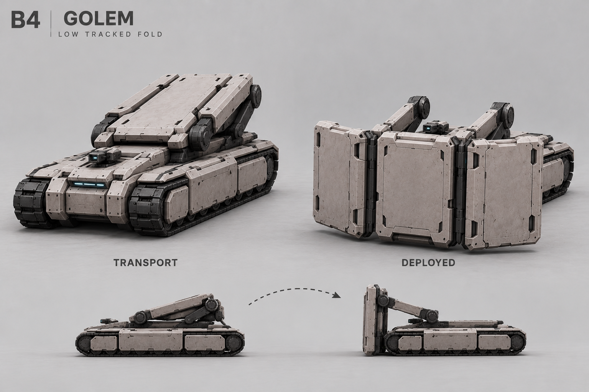
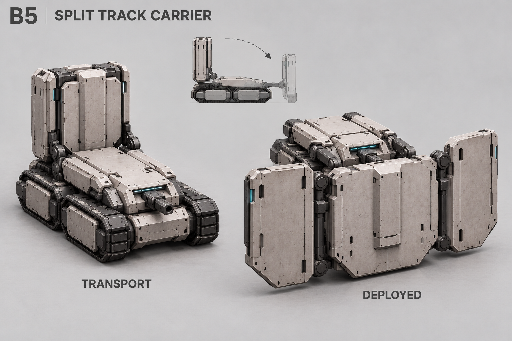
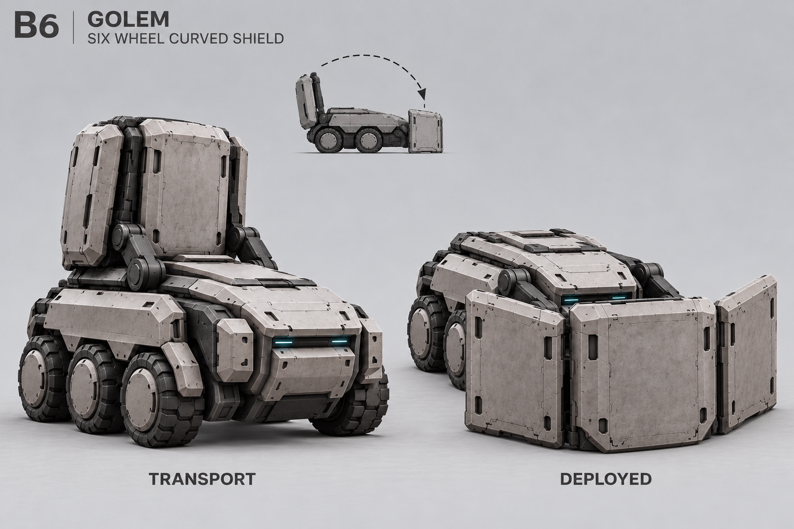

B5 — походный модельный лист

Походная форма слева, оборонная справа. Концепты для выбора конструкции, не точные чертежи. Плита сзади переносится вперёд и раскрывается шире корпуса.

Самый прямой перенос массивности B.

Шесть колёс; малая схема ошибочно разворачивает корпус — ориентиром служат большие виды.

Четыре колеса, короткий корпус и выраженный широкий экран.

Низкая укладка; покрытие тыла потребует доработки.

Четыре гусеничных блока в двух рядах.

Скруглённые секции; положение раскрытой плиты исправлено.
